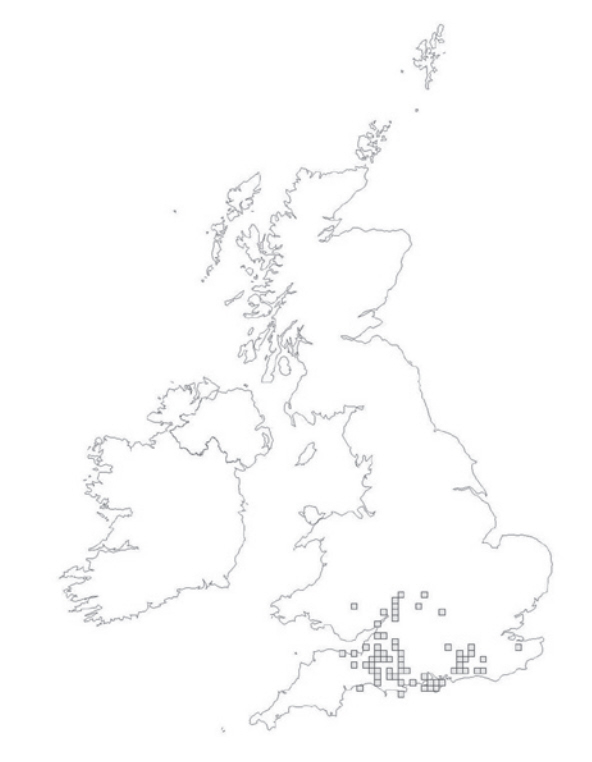

Bechstein's is one of the UK's rarest bats, found almost exclusively in woodland habitat. The Bechstein's is one of the UK's rarest bats, found almost exclusively in woodland habitat. The destruction of ancient mature fore
| Head & body length: | 43mm - 53mm |
|---|---|
| Forearm length: | 38mm - 47mm |
| Wingspan: | 250mm - 300mm |
| Weight: | 7g - 13g |
| Colour: | Pale to reddish brown fur, greyish underneath. Pink face |
Until recently very little was known about the Bechstein's bat in the UK- in 2005 there were just six breeding populations of Bechstein's bat. It is largely known as a woodland bat that, like the long-eared bats, captures much of its prey by passive listening for insect noise.
Being one of the rarest mammals, much remains to be learned about Bechstein's bat. The information contained in this factsheet may change as further roosts are discovered and research is undertaken
Deciduous woodland provides most of the habitat for Bechstein's bat - it uses woodland for roosting, foraging and almost certainly hibernation. Mature dense woodland is ideal, ensuring that Bechstein's do not often come into contact with people.
In summer, Bechstein's bat roosts largely in woodpecker holes, although sometimes behind loose bark or in tree crevices (also occasionally in bat boxes). It rarely roosts in buildings. It is thought to hibernate in similar roosting sites to those it uses in summer, although perhaps in slightly deeper tree holes. It is also occasionally found in underground sites.
Bechstein's bats tend to forage in woodland within a kilometre or two of their roost site, generally high up in the canopy although they are occasionally observed flying nearer the ground, perhaps when drinking, commuting or socialising.
Bechstein's bat eats prey from most insect groups. Droppings work on the Isle of Wight and in Wiltshire shows that it eats dung flies, grasshoppers and nut weevils, as well as moths and other types of flies.
A colony located in an area that has lost of all of its deciduous woodland forage has been shown to have a diet that includes non-flying insect larvae and spiders that are gleaned from vegetation and near to the ground, but this is atypical.
Mating occurs in autumn and spring, with maternity colonies forming in April and May. Females gather in colonies of between 10 and 30 bats (and up to 100 in some cases), with babies born at the end of June to the beginning of July.
Maternity colonies are often spread across a number of roost sites, changing their location frequently throughout the summer. Bechstein's bats have been recorded as living up to 21 years.
The Bechstein's bat has very quiet echolocation , and as a result is difficult to detect. The frequency of most energy is 50kHz, and the call sounds like 'tik'

Very rare, found in southern Wales and parts of southern England. The UK is at the nothernmost edge of its distribution range.
The Bechstein's bat has gone from being one of the commonest UK species after the last ice age to one of the rarest, due largely to the destruction of ancient woodland that once covered the UK (it now represents around 2%).